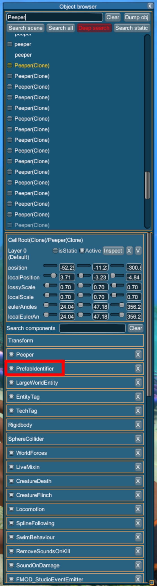

Using the runtime editor
The first thing you'll need to do is download and install Lee23's runtime editor from Submodica.
Here is the link:
https://submodica.xyz/mods/sn1/109
Once you have it installed, open Subnautica and press F7 to open the runtime editor. It should look something like this:

To find, for example, a peeper prefab, click on the search bar in the top right and type in "Peeper", then click "Search Scene".
When prefabs are instantiated (Spawned in the scene) they get "(Clone)" added to their name.
Knowing this, we're looking for "Peeper (Clone)".
Once you've found a Peeper, if you wanted to replace a texture on the Peeper you'd click on the PrefabIdentifier component to view the ClassId
